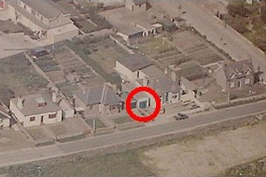
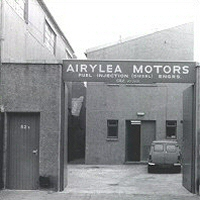

Company History
Airylea Motors has a history stretching back to the early Sixties.
The company was founded by James A. Gardiner in 1964. James was born in Cullen in 1928
and after serving his time as a commercial truck mechanic, and doing his national service
during the war, he went on to run and work in the business up until retiring in 1994.
|  |
| The birth place of Airylea Motors |
The company began it's early days in a small workshop built in a converted garage at
James's house. That's it in the picture above. James continued to run the company from there
for the next 14 years, building trade and managing to find time to have a family of five.
In the mid-seventies business had expanded to the point that new premises were needed and
in 1978 Airylea Motors moved to their present location in Menzies Road in Aberdeen.
|  |
| The new Airylea Motors (circa 1978) |
After James retired in 1994 two of his sons took over the running of the business.
Robert Gardiner (below left) joined the business in 1981 and was joined the following
year by his brother Findlay (below right).
After 12 years gaining a wealth of experience in all manner of fuel injection systems
they had the knowledge and ability to take over from their father and to advance the
company through the last 9 years. The company is now foremost in its field and has
seven employees and probably the largest stock of fuel injection spares in Scotland.
|